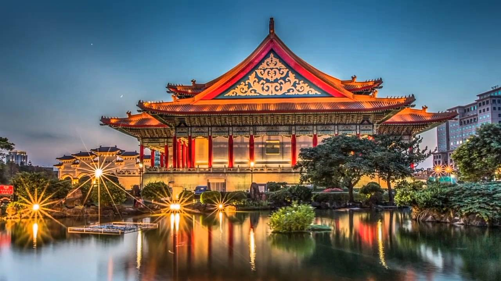
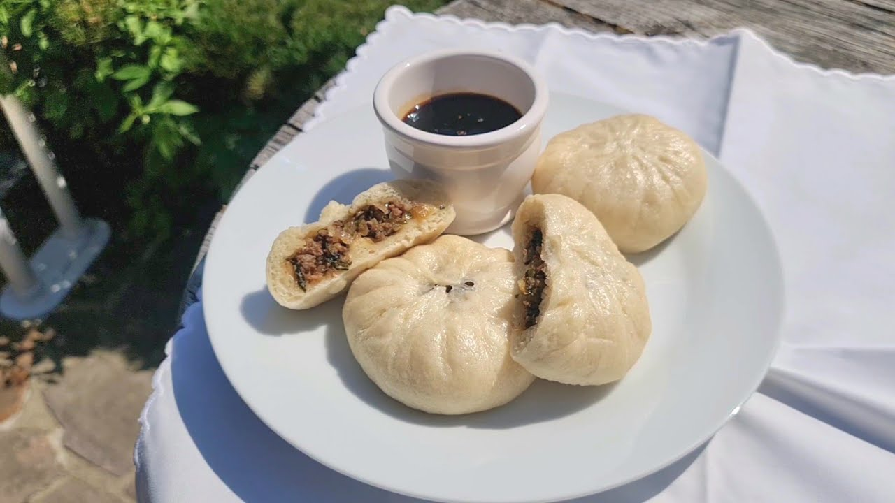
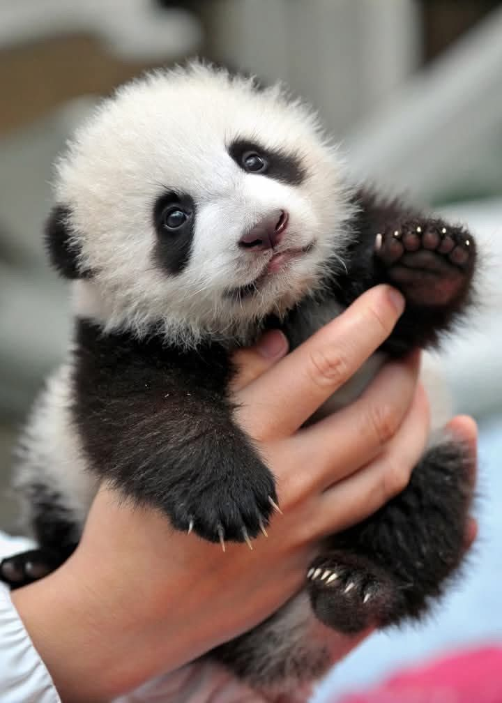
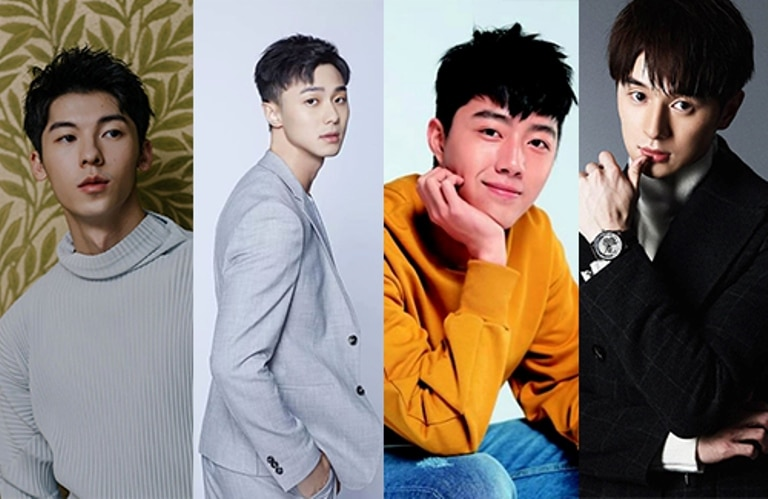

<!DOCTYPE html>
<html lang="en">
<head>
    <meta charset="UTF-8">
    <meta name="viewport" content="width=device-width, initial-scale=1.0">
    <title>Современный Тайвань</title>
    <link href="style_modern.css" rel="stylesheet"/>
</head>
    </html>
    <html>
        <body>
            <main>
            <h1>Тайвань</h1>
            <section>
            <!--Добавть фотографии-->
            
            <p id="pila1"> Факты о острове <a href="http://стофактов.рф/20-интересных-фактов-о-тайване/" target="_blank" id="pila1"> Тайвань</a></p>
            </section>
        <section>
            <h2>Топ-5 блюд в Тайване</h2>
            <ul>
                <li>Говяжий суп с лапшой</li>
                <li>Сяолунбао(паровая булочка)</li>
                <li>Кальмар на гриле</li>
                <li>Тушёный рис со свининой</li>
                <li>Манговый ледяной десерт</li>
            </ul>
        <figure>
            
        </figure>
            </section>
            <h3>Виды панд</h3>
            <ol>
                <li>Большая панда</li>
                <li>Циньлинская панда</li>
                <li>Красная панда (малая) </li>
            </ol>
        <figure>
            
        </figure>
            <h4>Тайваньские актёры</h4>
            <ul>
                <li><strong>Джерри Янь</strong>
                    Тайваньский актёр, модель и певец,участник F4. «Любящий, никогда не забывающий» вместе с китайской актрисой Тун Лии.«Посчитай свои счастливые звёзды»,«Позови меня огнём»,«Запретный цветок»
                </li>
                <li><strong>Майк Хэлиня</strong> 
                    Тайваньский актёр и модель.«Жёсткая мама»
                </li>
                <li> <strong>Этан Жуань</strong>
                    Тайваньский актёр и фотомодель, лауреат премии Golden Horse за лучшую мужскую роль в фильме «Монга».«Свинья, змея и голубь», за что получил премию «Лучший актёр». 
                </li>
                <li><strong>Марк Чао</strong>
                    Тайваньско-канадский актёр, певец и модель.«Легенда о жемчужинах Нага»
                </li>
                <li><strong>Руби Линь</strong>
                    Тайваньская актриса, теле- и кинопродюсер, певица. «Моя прекрасная принцесса»,«Герцог Маунт-Дир»,«Дом, который никогда не умирает»,«Преданность подозреваемого Икс» 
                </li>
            </ul>
        <figure>
            
        </figure>


        <h2>Вопросики</h2>
        <div class="lastbutt">
            <input type="text" name="taiwan" placeholder="Вы узнали,что-то интересное?">
            <button type="submit">отправить</button>
        </div>


        </section>
        </main>
    </body>
</html>